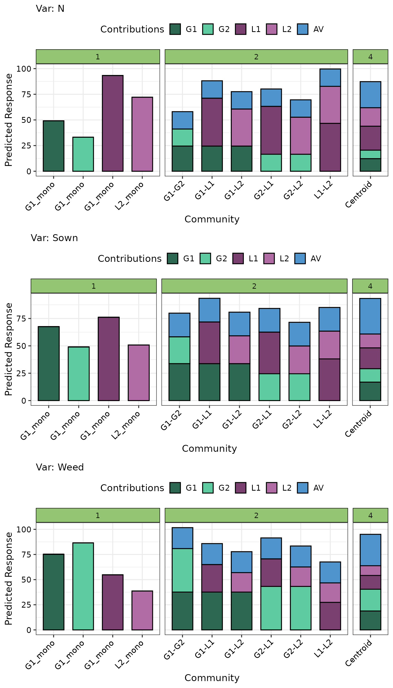

Using DImodelsVis with regression models fit using the `DImodelsMulti` R package
DImodelsVis-with-DImodelsMulti-models.RmdData exploration
Load data
This data (henceforward referred as Belgium) comes from
a BEF experiment conducted in Belgium as part of the wider
“Agrodiversity Experiment” Kirwan et al
2014. In this study, thirty experimental plots were established with
one to four species (two grasses G1-G2 and legumes L1-L2), representing
fifteen plant communities, each sown at two seeding densities. Three
ecosystem function responses, namely DM yield (called
Sown), Weed suppression (called Weed) and
Nitrogen yield (called N) are recorded for each plot at a
single time point and stored in the column Y. The data is
available in the DImodelsMulti
R package and an analysis of the this dataset can be found in Dooley et al., 2015.
head(dataBEL)
#> Plot G1 G2 L1 L2 Density Var VarNum Y
#> 1 1 0.7 0.1 0.1 0.1 1 Sown 1 104.156
#> 2 1 0.7 0.1 0.1 0.1 1 Weed 2 100.058
#> 3 1 0.7 0.1 0.1 0.1 1 N 3 87.996
#> 4 2 0.1 0.7 0.1 0.1 1 Sown 1 82.547
#> 5 2 0.1 0.7 0.1 0.1 1 Weed 2 89.801
#> 6 2 0.1 0.7 0.1 0.1 1 N 3 72.239Model fitting
We fit the average pairwise Diversity-Interactions model to all three
ecosystem functions in the Belgium dataset using the
DImulti() function from the DImodelsMulti
package. The main benefit of fitting a single model for all responses is
that it allows us to capture covariances between the ecosystem
functions.
# Name of compositional predictors (species)
species <- c("G1", "G2", "L1", "L2")
# Functional groupings of species
FG <- c("Gr", "Gr", "Le", "Le")
# Colours to be used for pie-glyphs for all figures
pie_cols <- get_colours(vars = species, FG = FG)
model <- DImulti(prop = species, FG = FG, y = "Y",
eco_func = c("Var", "un"),
unit_IDs = "Plot", DImodel = "AV",
method = "REML", data = dataBEL)The model coefficients are as follows
model
#> Note:
#> Method Used = REML
#> Correlation Structure Used = un
#> Average Term Model
#> Theta value(s) = 1,1,1
#>
#> Generalized least squares fit by REML
#> Model: Y ~ 0 + Var:((G1_ID + G2_ID + L1_ID + L2_ID + AV))
#> AIC BIC logLik
#> 560.2461 608.9134 -259.1231
#>
#> Multivariate Correlation Structure: General
#> Formula: ~0 | Plot
#> Parameter estimate(s):
#> Correlation:
#> 1 2
#> 2 0.738
#> 3 -0.175 0.386
#>
#>
#> Table: Fixed Effect Coefficients
#>
#> Beta Std. Error t-value p-value Signif
#> -------------- -------- ----------- -------- ---------- -------
#> VarN:G1_ID +49.113 4.966 9.889 3.091e-15 ***
#> VarSown:G1_ID +67.548 4.176 16.174 3.662e-26 ***
#> VarWeed:G1_ID +75.241 8.341 9.020 1.362e-13 ***
#> VarN:G2_ID +33.173 4.966 6.679 3.682e-09 ***
#> VarSown:G2_ID +49.019 4.176 11.737 1.182e-18 ***
#> VarWeed:G2_ID +86.523 8.341 10.373 3.826e-16 ***
#> VarN:L1_ID +93.338 4.966 18.794 4.283e-30 ***
#> VarSown:L1_ID +76.145 4.176 18.233 2.777e-29 ***
#> VarWeed:L1_ID +54.803 8.341 6.570 5.871e-09 ***
#> VarN:L2_ID +72.159 4.966 14.529 1.669e-23 ***
#> VarSown:L2_ID +50.810 4.176 12.166 1.999e-19 ***
#> VarWeed:L2_ID +38.722 8.341 4.642 1.437e-05 ***
#> VarN:AV +67.685 10.827 6.251 2.263e-08 ***
#> VarSown:AV +86.495 9.104 9.500 1.674e-14 ***
#> VarWeed:AV +83.296 18.184 4.581 1.809e-05 ***
#>
#> Signif codes: 0-0.001 '***', 0.001-0.01 '**', 0.01-0.05 '*', 0.05-0.1 '+', 0.1-1.0 ' '
#>
#> Degrees of freedom: 90 total; 75 residual
#> Residual standard error: 8.271401
#>
#> Marginal variance covariance matrix
#> N Sown Weed
#> N 68.416 42.450 -20.059
#> Sown 42.450 48.377 37.290
#> Weed -20.059 37.290 192.990
#> Standard Deviations: 8.2714 6.9554 13.892The average interaction effect is significant for all three ecosystem functions. Additionally, sown is positively correlated with the other two ecosystem functions while Weed and N are negatively correlated.
Model diagnostics
The model diagnostics function works directly with
DImodelsMulti model object. However, only the
"Pearson Residual vs Fitted" and
"Qunatile-Quantile" plots can be created for these
models.
model_diagnostics(model = model, which = c(1, 2), nrow = 1)There don’t seem to be any strong violations of any model assumptions. The pie-glyphs indicate that mixture perform higher than the monocultures across the board.
By default, all ecosystem functions are plotted in the same panel, however it is also possible to view them in separate panels as follows:
model_diagnostics(model = model, which = c(1, 2), nrow = 2) +
facet_wrap(~Var)
Model interpretation
All the visualisation functions aiding with model interpretation in
DImodelsVis integrate smoothly with statistical model
objects fit using DImodelsMulti. The visualisations are
automatically split into separate panels for each ecosystem function (or
time-point) in the model by default. However, users also have the option
to create the visualisations for only specific ecosystem functions (or
time-points) if they desire.
Gradient-change plot
We depict the average BEF relationship with respect to species richness for all three ecosystem functions.
grad_data <- get_equi_comms(4, variables = c("G1", "G2", "L1", "L2")) %>%
mutate("Rich." = Richness)
gradient_change(model = model, data = grad_data, nrow = 1)The BEF relationship observed across all three ecosystem functions exhibits the characteristic saturating shape, where gains in function diminish as diversity increases.
Conditional ternary plot
We create conditional ternary diagram with the proportion of L1 fixed to be 0, 0.25, and 0.5.
conditional_ternary(model = model, resolution = 1,
tern_vars = c("G1", "G2", "L2"),
conditional = data.frame(L1 = c(0, 0.25, 0.5)),
lower_lim = 30, upper_lim = 110, nlevels = 8,
nrow = 3)The prediction for DM and nitrogen yield proportion of L1 increases to 0.5, while that of weed suppression decreases.
Grouped ternary plot
We create a grouped ternary plot where the two grasses are grouped together and the total grasses proportion is split equally between G1 and G2. Additionally, till now we have been using the default option of showing the visualisations for each ecosystem function. As an example, to showcase how this can be changed, we will only show the plots for nitrogen yield and weed suppression in this example. However, note that this would be possible to do with any visualisation in the package.
grouped_ternary(model = model, resolution = 1,
FG = c("G", "G", "L1", "L2"),
# Split of species within each group
values = c(0.5, 0.5, 1, 1),
lower_lim = 30, upper_lim = 110, nlevels = 8,
add_var = list("Var" = c("N", "Weed")),
nrow = 2) # Arrange in two rowsThe visualisation very clearly shows the trade-off between weed suppression and nitrogen yield as weed suppression is maximised by increasing the proportion of grasses while nitrogen yield is maximised by increases the proportion of legumes.
Effects plot
We visualise the effect of adding L1 and L2 to several equi-proportional mixtures on each ecosystem function.
eff_data <- get_equi_comms(4, variables = c("G1", "G2", "L1", "L2"))
visualise_effects(model = model, data = eff_data,
var_interest = c("L1", "L2"),
# arrange plot in three row (one for each function)
nrow = 3) This figure shows that no single species maximizes all three ecosystem functions. For example, increasing the proportion of L1 improves dry matter and nitrogen yield but leads to a marked reduction in weed suppression.
Simplex path plot
We depict the change in the predicted response as we move from the four-species centroid community towards each binary two-species mixture.
In addition to the standard arguments, we also show how one can create multiple plots for different levels of any non-compositional experimental treatments in the data (if used as predictors in the model). For example, suppose we had used Density as a predictor in the model and wished to visualise how does performance differ across the two seeding density levels, one could do it as follows:
# The centroid community (starting point for the straight line)
starts <- tribble( ~G1, ~G2, ~L1, ~L2,
0.25, 0.25, 0.25, 0.25)
# The six binary mixtures (ending points for the straight lines)
ends <- tribble(~G1, ~G2, ~L1, ~L2,
0.5, 0.5, 0, 0,
0.5, 0, 0.5, 0,
0.5, 0, 0, 0.5,
0, 0.5, 0.5, 0,
0, 0.5, 0, 0.5,
0, 0, 0.5, 0.5)
# Create the visualisation
simplex_path(model = model,
starts = starts, ends = ends,
# Manually specify to create plot for Weed and N
add_var = list("Density" = factor(c(- 1, 1))), nrow = 3, ncol = 2)
In this example, density was not included as a predictor in the model, so the two panels at different density levels appear identical. Nonetheless, the same approach could be applied in other situations when any other non-compositional variable is used as a predictor to visualise performance, across its different values. Importantly, this flexibility extends to any visualisation within the package. Furthermore, note that this would be possible to do with any visualisation in the package as well.
Prediction contributions plot
Currently, the prediction contributions plot does not work directly
with a DImulti object. However, this functionality will
soon be added. For the time being, here is how the prediction
contributions plot can be created for a DImulti model.
These steps should be followed: 1. Create a data.frame containing the
species communities for which you wish to visualise prediction
contributions and a column containing names of the ecosystem functions
for which you wish to generate predictions (the
add_add_var() function helps with this). Ensure this data
also contains any other additional predictors from the model such as
nitrogen treatment, seeding density, etc. 2. Prepare the data needed for
the prediction contributions plot using the
prediction_contributions_data() function. The important
steps here is to create a manual grouping for the coefficients using the
coeff_groups parameter ensuring that identical coefficients
repeated across functions are assigned the same group and thus share a
single colour in the plot. For example, the G1 identity effect (G1_ID)
or the average interaction effect (AV) across all three ecosystem
functions are grouped to be a single term. This grouping can be done
either by coefficient indices or their names and it is not mandatory to
group all coefficients. The user can decide a grouping that best suits
their example. 3. Pass the prepared data to the
prediction_contributions_plot() function to visualise the
prediction contributions.
pred_data <- get_equi_comms(4, richness_lvl = c(1, 2, 4),
variables = c("G1", "G2", "L1", "L2")) %>%
mutate(labels = c("G1_mono", "G1_mono", "G1_mono", "L2_mono",
"G1-G2", "G1-L1", "G1-L2", "G2-L1", "G2-L2", "L1-L2",
"Centroid")) %>%
# Repeat each community across the three ecosystem functions
add_add_var(add_var = list("Var" = c("N", "Sown", "Weed"))) %>%
mutate(G1_ID = G1, G2_ID = G2, L1_ID = L1, L2_ID = L2,
AV = DI_data_E_AV(prop = 1:4, data = .)$AV,
"Rich." = Richness)
prediction_contributions_data(data = pred_data, model = model,
bar_labs = "labels",
# Important to group the coefficients
groups = list("G1" = 1:3, "G2" = 4:6,
"L1" = 7:9, "L2" = 10:12,
"AV" = 13:15)) %>%
prediction_contributions_plot(colours = c(pie_cols, "steelblue3"),
nrow = 3) +
facet_grid(~ Rich., scale = "free_x", space = "free_x") +
theme(axis.text.x = element_text(angle = 45, hjust = 1.1, vjust = 1.1))
The best performing monoculture differs across the three ecosystem function. However, the four species centroid mixture containing 25% of each species performs comparably or out-performs the best monoculture for each ecosystem function.